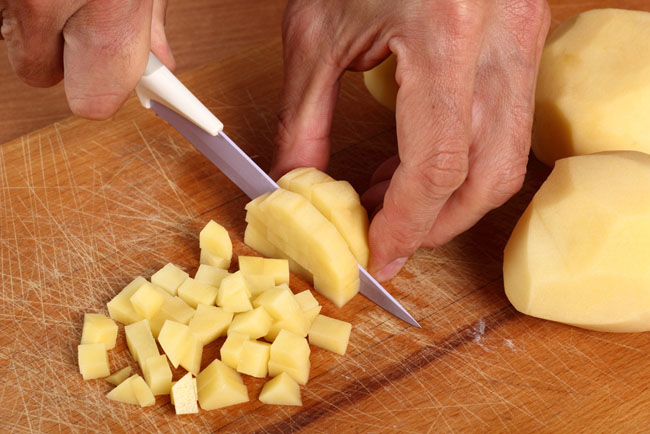
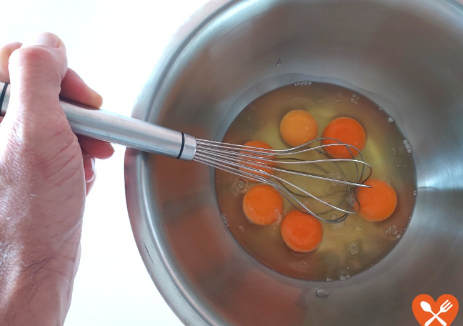
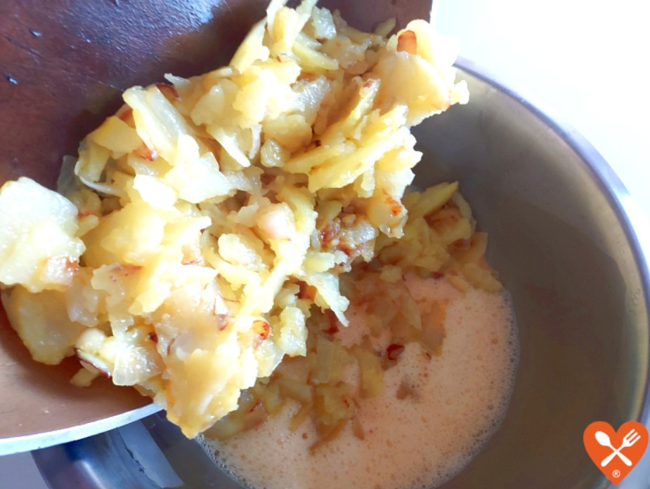
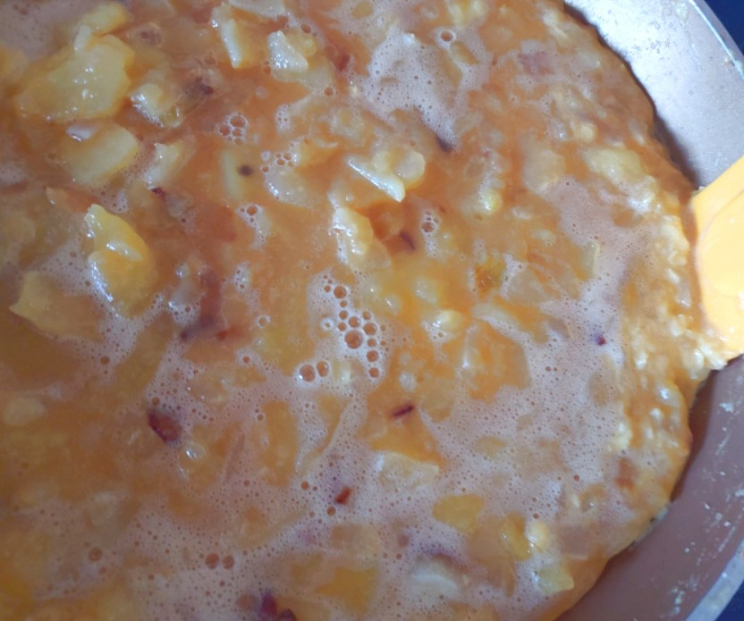
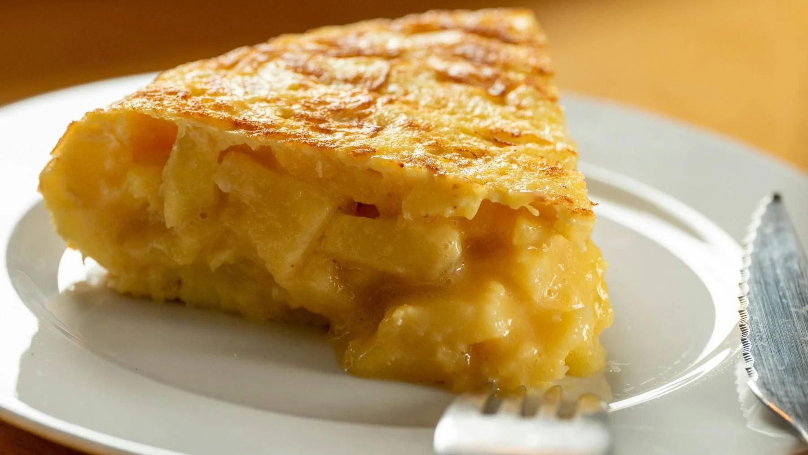

Tortilla de patatas
Índice
Ingredientes
- 4 patatas medianas
- 6 huevos
- 1 cebolla (opcional)
- 1/2 vaso de aceite de oliva
- Sal al gusto
Paso a paso
- Pela y corta las patatas en rodajas finas.

- Fríe las patatas en abundante aceite durante 15 minutos.

- Bate los 6 huevos en un bol grande y añade sal.

- Escurre las patatas, mézclalas con los huevos y remueve bien.

- Cuaja la mezcla en una sartén antiadherente durante 5 minutos por cada lado.

Volver al principio
Resultado final
